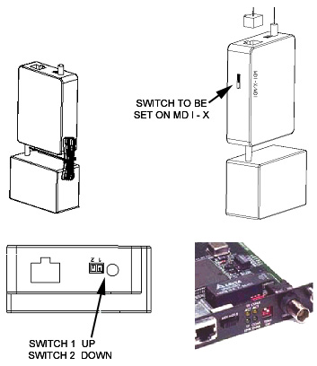

Operating Documentation
Direction 5193755-800, Rev# 8
BrightSpeed (Ltd. Access) Service Methods - Adv
Operating Documentation |
This module applies to the LightSpeed H16 Media Converter (part 2377227).
All switches are set in manufacturing and tested with each console. However, if you need to check the switch settings, the correct settings are listed in Table 1 below. Please note the orientation of the media converter in the console. Refer to Illustration 1 for the Media Converter.
Table 1: Media Converter Switch Settings
| Switch | Setting |
| 1 | UP (away from #) |
| 2 | DOWN (toward #) |
Illustration 1: Media Converter (2377227)
